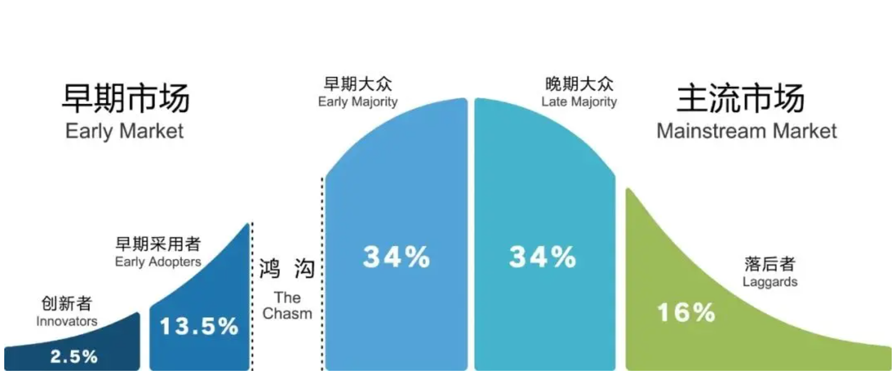

峥锐ZAPEX丨品牌出海加速器 导读：
最近，拓竹科技（Bambu Lab)向员工母校捐赠1个亿奖学金的事情刷屏了。
这笔巨额捐赠背后，是这家成立于2020年的公司惊人的经营效率：2022年5月发布第一款产品X1，2023年营收大概15亿元人民币；2024年营收约55-60亿元人民币，净利润接近20亿元；2025年营收预计突破100亿元。
拓竹拥有一支顶级科学家和工程团队，把长期停留在专业圈层的3D打印技术，通过系统性创新，压缩成普通用户也能稳定使用的产品形态；重新拉开了一个性能与体验的区间，建立了新的产品标准、开创了家用3D打印机的新品类。
但如果解读只停留在技术突破本身，很容易忽略一个更关键的问题：这样一款高度创新、复杂、价格不低的技术产品，是如何一步步走出小众圈层，建立起可规模化、可复制、且高度盈利的高速增长模型的？
在大多数人的认知里，3D打印一直存在三重“天然门槛”：产品复杂、价格不低、学习成本极高。这导致3D打印产品很早就出现了，但始终没有真正走向大众市场。
如果把拓竹的增长路径拆开来看，会发现它在全球市场中，清晰地走过了两个完全不同的阶段：
它在最初没有选择亚马逊平台卖货，而是先在专业的、规模较小的人群中验证产品与技术路径；在产生了“溢出效应”之后，再切换到面向更广泛用户的增长打法。从2023年到2024年翻倍增长，说明它在0→1阶段验证成功后，进入了快速放大的增长期。
这正是一套教科书级别的“跨越鸿沟”式的增长路径。
技术产品的增长不是平滑曲线，而是“跨越鸿沟”
在《跨越鸿沟》书中，杰弗里·摩尔提出了一个重要观点：技术产品的增长，并不是一条连续平滑的曲线，而是被不同类型的用户群体，切割成几个阶段。
早期用户，关注的是能力边界和技术可能性；主流用户，关心的是是否好用、是否稳定、是否值得买。
这两类人之间，并不存在自然过渡，中间有一个“市场鸿沟”。如果企业在不同阶段，使用同一套产品逻辑和营销方式，增长往往会出现断崖。很多科技类公司死于没有成功跨越这道鸿沟。
“跨越鸿沟”本质上是一套阶段性用户选择与系统性决策切换的范式。拓竹的增长打法，在于它在两个关键阶段，分别成功应用了两套完全不同的系统。

01 第一阶段：品牌 0→1：原点期
在拓竹出现之前，主流的3D打印机长期处在一种状态：设备不便宜，但体验高度不确定。
打印成功率不稳定，调平、校准等参数设置依赖经验。用户通常要经历很多次失败，才能完成一次完整打印。大量时间被浪费在调试和排错上，而不是创作本身。
在这样的市场环境下，如果直接进入大众用户市场，很容易被“使用噪音”淹没：难以分辨问题究竟来自产品技术本身，还是来自用户操作。
这决定了拓竹在品牌的原点期，最重要的是：跑通产品价值验证和早期增长验证，确认技术路径是否成立。
原点期的用户选择：工程师、硬件玩家、重度 Maker
这类极客用户痛点明确，付费意愿强；能够高频、真实地使用产品，清楚区分技术问题和体验噪音，并通过持续反馈，推动产品从“不稳定”走向“可复制稳定”，加速产品的迭代。
在这一阶段，这类用户对品牌最大的价值是：
产品是否成立的验证、关键问题的快速暴露、高质量使用内容的自然产出，以及初始阶段的增长放大。
对于创新程度极高的科技品牌来说，原点期最重要的决策，不是追求规模，而是：选择什么样的原点用户，来完成验证闭环。
原点期的营销 4P 模型：围绕“验证密度”展开的一整套配称
原点期的拓竹，并没有刻意降低产品复杂度。高速打印、多材料系统、稳定性突破等等技术，是产品的核心。
这不是为了普及3D打印，而是为了在真实、高强度使用中，尽快确认能力边界。
在这个阶段，产品的意义是：能否支撑用户持续使用、持续暴露问题，获取用户反馈、快速迭代。
拓竹一反中国出海品牌喜欢追求“性价比”的惯例，没有通过压低价格去获取市场，它的X1系列定价7999-9999。当时主流的DIY机器（如创想三维等）定价在￥1,500-￥3,000之间。拓竹的价格是它们的3-4倍。
较高的定价，完成了几件关键事情：
- 过滤非重度用户
- 确保用户有动力解决问题，而不是轻易放弃
- 为快速研发和工程迭代提供现实空间
价格在这里的作用，不是放大市场，而是稳定验证环境。
出海品牌第一站都会放在电商平台上，而令人惊讶的是：拓竹并没有第一时间进入亚马逊等平台型渠道，主动放弃了平台流量。
原点期，跑通验证、获得对市场的真实反馈和对用户的真实洞察，比获取利润与规模更为重要。
拓竹保持了极度的克制：它把销售重心放在自己的官网，并结合众筹平台，直接面对第一批核心用户。
它将的硬件销售和软件系统深度绑定，通过官网直销，品牌可以明确知道：
- 设备卖给了什么类型的用户
- 用户在什么阶段开始高频使用
- 问题集中出现在哪些使用场景
在软件层面，拓竹并没有把打印机当作一个纯硬件交付，而是通过配套软件，把大量使用过程结构化地记录下来。
设备状态、打印失败、材料使用、参数调整等关键行为，都会被持续捕捉和汇总。反馈不再凭主观感受，而是可以被工程团队反复分析的使用信息。
这一点，对于高度复杂的技术产品尤为重要。
如果过早进入平台渠道，用户反馈会变成亚马逊简单的好评或差评，失去了深度洞察用户的机会；而在原点期，拓竹真正需要的，并不是“满意度”，而是问题出现的条件、频率和边界。
官网直销+软件系统，让拓竹在原点期获得了一套完整的闭环：
- 知道用户是谁
- 知道他们如何使用
- 知道用户不满意的是哪里
- 优化迭代的方向是什么
这也是为什么拓竹可以在极短时间内，把大量原本依赖经验的操作，逐步固化成稳定流程，并为后续产品封装打下基础。
当产品稳定性和使用路径被反复验证后，渠道的重心才有条件从“理解用户”，切换到“触达更多用户”。
在原点期，拓竹选择了极客用户作为第一批核心用户。这是一群势能高、动手能力强、使用频率极高的人群。
他们会自发拆解、测试、对比产品，也愿意把完整的使用过程公开出来。这些调试过程、失败记录、真实作品，被自然地分享和讨论。这些内容不一定具备品牌高级感，但在专业圈层中具备极强的可信度。
这些用户产生了大量高质量UGC——比如“几分钟用Bambu Lab打印出一个大型玩具”、“一次成型、多色打印全过程”这样的视频，在YouTube、Reddit等平台持续扩散。
由极客用户驱动的真实传播，形成了品牌从0到1阶段最关键的口碑基础，引发了更大范围用户的关注、好奇和模仿，为后续大众用户的进入提前完成了认知铺垫。
02 第二阶段：增长期
原点期验证了产品功能、付费意愿、软件黏性和口碑裂变带来的自然增长能力，品牌势能开始溢出，增长逻辑发生变化。
要顺利“跨越鸿沟”，实现早期重度用户向大众用户的转变，拓竹在增长期的营销4P模型已经完全变化了，我们来逐一拆解。
增长期的变化方向：降低不确定性
此时需要解决的，不再是“产品是否成立”，而是：如何让更多非技术背景的大众用户，也能稳定地获得同样的结果。
这意味着，几乎所有关键决策，都要围绕一个目标重新组织：提升产品稳定性和易用性换取规模化增长。
从“展示技术肌肉”，转向“简单易用”。
在增长期，拓竹没有继续拉高参数天花板，而是让用户不需要理解原理和参数，只需要“傻瓜式开箱即用”，就能打印出一个完美的作品。
这一步的本质，是把极客阶段已经被验证过的复杂能力，重新封装成“可重复的大众体验”。产品的定位是确保用户“不会失败”。
从“筛选用户”，转向“降低决策门槛”。
增长期，价格开始服务于另一个目标：让更多用户愿意下单。拓竹并没有用激进降价换规模，而是通过不同产品线，把已经被验证的价值，拆分成更多可被接受的价格区间。
在迈向大众市场的增长期，拓竹主要推出了两款极具代表性的“普及型”型号，用以消解技术门槛并覆盖不同需求的消费级用户：
- Bambu Lab P1系列—— 生产力工具的“去繁就简”
这是拓竹跨向大众市场的中阶支柱。通过更亲民的价格（4000-6000元档位）和高性能，成功吸引了大量需要稳定生产力、但对极客黑科技不感冒的设计师和工作室用户。
###
Bambu Lab A1系列—— 彻底的“家电化”尝试
这是拓竹真正打入大众入门市场、实现规模爆发的重型武器，号称3D打印界的“全自动洗衣机”。
这款产品价格更低（1000-2000级别），通过极简的操作界面，让从未接触过3D打印的普通家庭和学生群体实现了“零门槛”入场，真正变成了“小白也能拥有的创意玩具”。
在原点期，拓竹用X1系列这种“重装武器”征服极客，立住技术主权；在增长期，拓竹则用P1和A1系列这种“轻量化、高性价比”的产品，配合亚马逊和线下渠道，完成了对大众市场的深度覆盖。
这种“先立高度、再拓宽度”的产品矩阵，正是跨越鸿沟、迈向百亿规模的关键支撑。
###
从“反馈优先”，转向“触达效率优先”
当产品已经足够稳定、问题边界足够清晰后，拓竹开始系统性进入亚马逊等主流电商平台和线下渠道，利用平台的巨大流量和线下渠道的覆盖能力，快速放大增长。
例如亚马逊的评价体系开始帮助用户做决策，物流和售后体系降低购买门槛，渠道本身成为“确定性”的一部分。
从“解释技术”，转向“展示结果”
在增长期，拓竹不再需要花大量篇幅解释技术突破。打印过程本身、成品本身，已经足够说明问题。
社交平台上的内容，更多是创作成果、应用场景和成功案例，而不是参数对比。这类内容，天然降低理解成本，让非技术用户也能迅速建立信心。
03 总结：“跨越鸿沟”式的增长路径
回头看拓竹的两个关键阶段，会发现它并没有把同一套打法一路“优化”下去，而是在关键节点，整体切换了增长系统。
在原点期，核心任务是验证产品是否成立和自然增长；
进入增长期，核心任务变成了放大已经被验证过的确定性。
这条分界线，正是《跨越鸿沟》中反复强调的那道断层。
很多科技品牌常发生阶段错配——在不该追求规模的时候追规模，在需要放大的阶段，仍然沿用验证期的打法。
当企业成功推出一项新的技术产品，企业必须付出更大的努力，对营销策略进行根本性改变，由占据早期市场成功过渡到服务于整个主流市场，对于任何一家高科技企业来说，如果想要顺利进行改变，它就必须摆脱以往常用的企业营销方式。
峥锐ZAPEX丨品牌出海加速器 撰写出品
严禁一切形式的转载